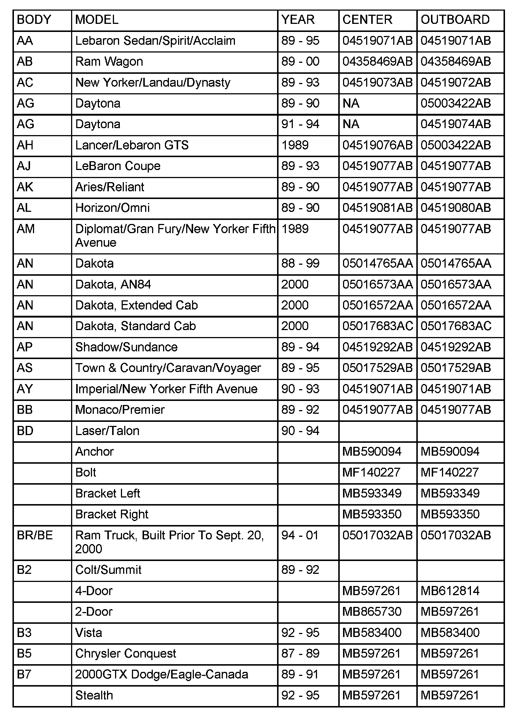
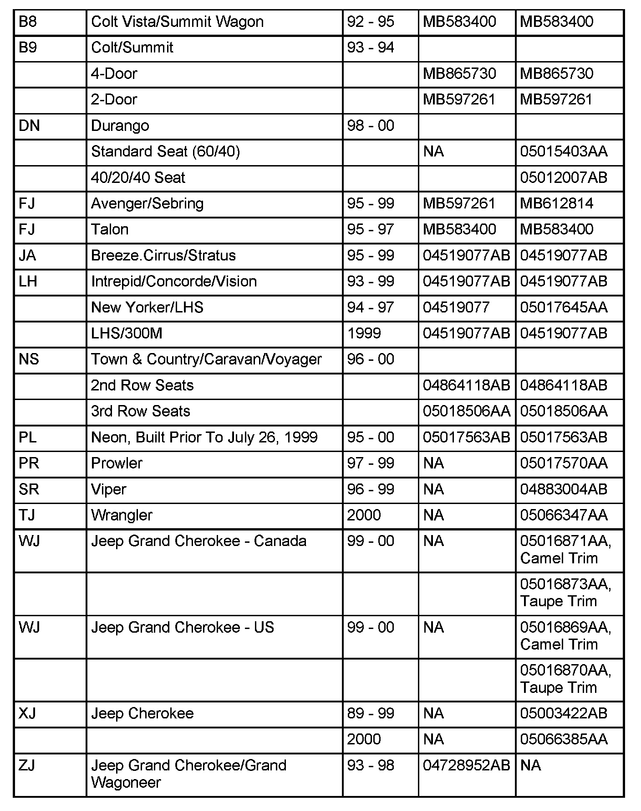
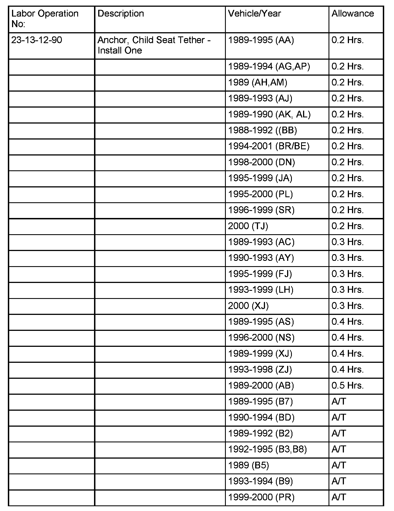
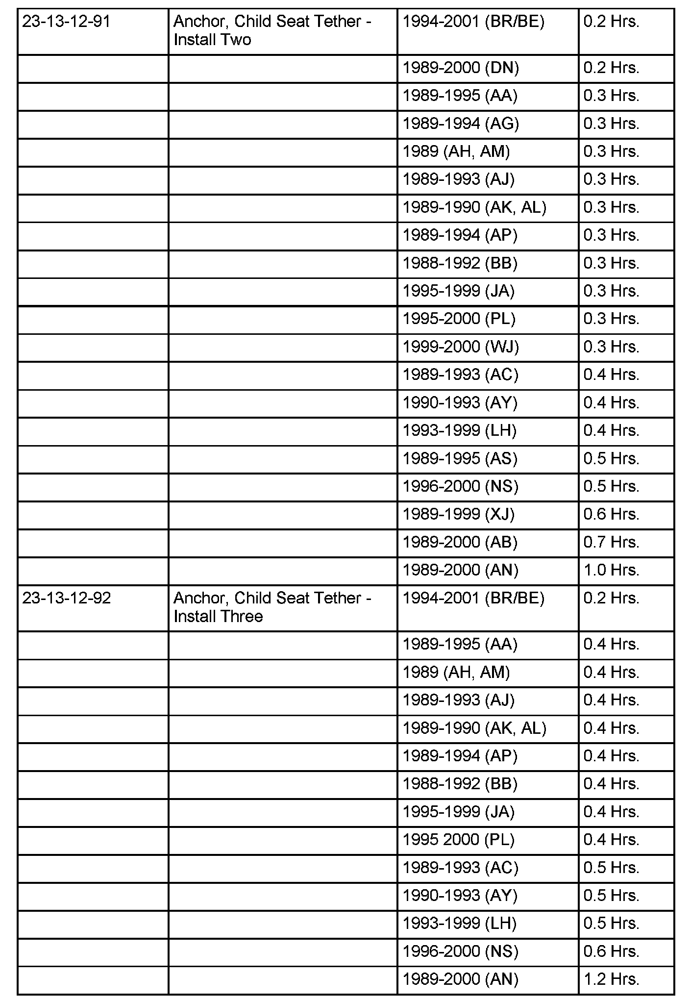
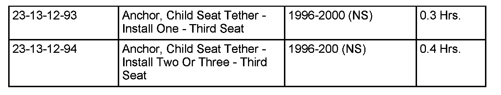

Restraints - Child Seat Tether Installation
NUMBER: 23-029-08GROUP: Body
DATE: October 24, 2008
THIS BULLETIN SUPERSEDES TECHNICAL SERVICE BULLETIN 23-08-00 REV. B, DATED NOVEMBER 24, 2000, WHICH SHOULD BE REMOVED FROM YOUR FILES. THIS IS A COMPLETE REVISION AND NO ASTERISKS HAVE BEEN USED TO HIGHLIGHT REVISIONS. DEALERS PLEASE NOTE, THIS IS REIMBURSABLE REGARDLESS OF VEHICLE AGE OR MILEAGE.
SUBJECT:
Child Seat Tether Anchor Installation
OVERVIEW:
This bulletin describes procedures to install Child Seat Tether Anchors based on Customer Request.
NOTE:
Dealers are encouraged to honor any customers request for the installation of the Child Seat Tether Anchors and Dealer reimbursement will be made by Chrysler regardless of vehicle age or mileage. See the Warranty Policy and Procedure Manual and or Warranty Bulletin D-08-33 for reimbursement detail.
MODELS:
1989 - 1995 (AA) Spirit/Acclaim/LeBaron Sedan
1989 - 2000 (AB) Ram Van/Wagon
1989 - 1993 (AC) Dynasty/New Yorker/New Yorker Salon
1989 - 1994 (AG) Daytona
1989 (AH) Lancer/Lebaron GTS
1989 - 1993 (AJ) Lebaron Coupe
1989 - 1990 (AK) Aries/Reliant
1989 - 1990 (AL) Horizon/Omni
1989 (AM) Diplomat/Gran Fury/New Yorker Fifth Avenue
1989 - 2000 (AN) Dakota
1989 - 1994 (AP) Shawdow/Sundance
1989 - 1995 (AS) Town & Country/Caravan/Voyager
1990 - 1993 (AY) Imperial/New Yorker Fifth Avenue
1988 - 1992 (BB) Monaco/Premier
1990 - 1994 (BD) Laser/Talon
1994 - 2001 (BR/BE) Ram Truck
1989 - 1992 (B2) Colt/Summit
1992 - 1995 (B3) Colt Vista
1989 (B5) Conquest
1989 - 1995 (B7) Stealth (2000 GTX Dodge/Eagle, Canada)
1992 - 1995 (B8) Colt Vista Wagon/Summit Wagon
1993 - 1994 (B9) Colt/Summit
1998 - 2000 (DN) Durango
1995 - 1999 (FJ) Sebring/Avenger/Talon
1995 - 1999 (JA) Cirrus/Stratus/Breeze
1993 - 1999 (LH) Concorde/Intrepid/Vision/LHS/New
Yorker/300M
1996 - 2000 (NS) Town & Country/Caravan/Voyager
1995 - 2000 (PL) Neon
1997 - 1999 (PR) Prowler
1996 - 1999 (SR) Viper/Viper GTS
2000 (TJ) Wrangler
1999 - 2000 (WJ) Grand Cherokee
1989 - 2000 (XJ) Cherokee/Wagoneer
1993 - 1998 (ZJ) Grand Cherokee/Grand Wagoneer
DISCUSSION:
User-ready child restraint tether strap anchors will be provided in passenger cars in the 2000 Model Year, and in light trucks in the 2001 Model Year and later. Tether straps improve the performance of child restraints in collisions. Because of the publicity that has accompanied the "Fit for a Kid" Program, owners of earlier products are expected to approach dealers for the free provision and installation of the anchor hardware.
Chrysler is offering child seat tether anchors for the selected vehicles listed above. Each tether anchor is packaged in a kit containing all necessary parts and a detailed instruction sheet.
NOTE:
This bulletin is provided to identify the parts and labor operation numbers necessary to install a Child Seat Tether Anchor. Each dealer is encouraged to install these kits based on customer request and Chrysler will reimburse any Chrysler / Dodge / or Jeep dealer installing these kits regardless of vehicle age or mileage.


PARTS REQUIRED:
POLICY:
Customer Satisfaction, Reimbursable regardless of mileage or age.



TIME ALLOWANCE:
FAILURE CODE:
Disclaimer:
This bulletin is supplied as technical information only and is not an authorization for repair.